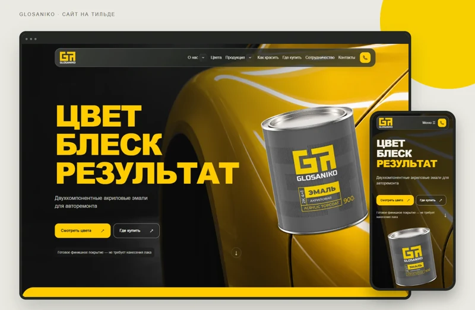
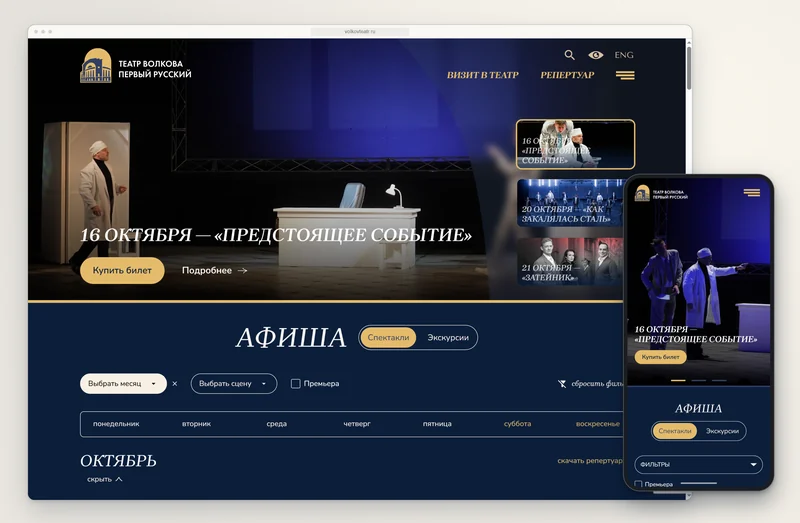

Лендинги и корпоративные сайты
Для презентации бизнеса, продвижения услуг и получения заявок.
Лендинг
100–150 тыс. ₽3 недели
Корпоративный сайт услуг
250–350 тыс. ₽6 недель
Создаём лендинги, корпоративные сайты, каталоги и интернет-магазины на Тильде. После запуска вы сможете самостоятельно обновлять тексты и изображения.
Посадочная страница под конкретную услугу, продукт или рекламную кампанию. Раскрываем предложение и помогаем посетителю оставить заявку.
Страницы компании и услуг, проекты и контакты. Продумываем структуру для знакомства с бизнесом и обращения к вам.
Ассортимент, характеристики и карточки товаров. Помогаем посетителю выбрать продукт и отправить запрос.
Каталог, корзина и оформление заказа. Настраиваем оплату и доставку с учётом возможностей платформы и согласованных интеграций.
Разберёмся, что должен решать сайт, учтём бюджет и сроки. Подберём структуру, дизайн и функциональность сайта на Тильде. Проверим, как реализовать нужные сценарии и интеграции.
Для презентации бизнеса, продвижения услуг и получения заявок.
Для знакомства с ассортиментом, выбора продукции и оформления заказов.
Это ориентиры стоимости и сроков. Итог зависит от состава страниц, дизайна, интеграций и готовности материалов. Подписку Тильды, домен, внешние сервисы и объём наполнения уточняем в смете.
Обычная стоимость: 100 000 ₽
Цена по акции: 90 000 ₽

От аналитики до релиза за 20 рабочих дней: каталог продукции и цветов, раздел для дилеров и визуал, созданный с помощью ИИ.
Читать кейс →
Два сайта первого русского театра: актуальная афиша, покупка билетов и энциклопедия его истории.
Читать кейс →Познакомимся, вникнем в задачу и сделаем предложение.
Обычно отвечаем в течение рабочего дня.
Вы можете записаться на платную консультацию стоимостью 10 000 ₽ с основателями Редстара Олегом Родиным и Анной Капустиной. Они разберут вашу ситуацию, найдут точки роста и дадут конкретные рекомендации. Для клиентов агентства такие консультации проводятся бесплатно.
Лендинг — 100 000–150 000 ₽, корпоративный сайт услуг — 300 000–400 000 ₽, каталог — 350 000–400 000 ₽, интернет-магазин — 400 000–500 000 ₽. Итоговую стоимость рассчитываем по страницам, дизайну, наполнению и интеграциям.
Ориентир для лендинга — 3 недели; корпоративного сайта и каталога — 6 недель; интернет-магазина — 8 недель. План уточняем после обсуждения задачи и готовности материалов.
Да, на Тильде можно сделать каталог или интернет-магазин. До старта проверяем сценарии каталога, оплаты, доставки и интеграций. Если стандартных возможностей недостаточно для вашей бизнес-логики, сравниваем другие варианты реализации.
Да, тексты и изображения можно редактировать в Тильде. После запуска показываем, как работать с согласованными страницами и блоками. Для изменения сложных блоков и интеграций можно подключать нашу техническую поддержку.
Нет, подписка Тильды не включена в указанную стоимость разработки. Условия её оплаты, а также домена и внешних сервисов фиксируем отдельно в смете. Полный состав затрат согласуем перед началом работы.
Да, сайт на Тильде можно продвигать в поиске и ИИ-ответах, но сама платформа не гарантирует видимость. Нужны доступные для индексации страницы, понятная структура, полезный текст и подтверждённые сведения о компании и услугах. Базовую подготовку сайта обсуждаем при разработке, регулярное SEO-продвижение и GEO-продвижение — отдельно.
Да, поддерживаем сайты на Тильде: вносим изменения в страницы, проверяем формы и интеграции, обновляем контент. Техническая поддержка подключается отдельно от разработки.
В разработку входят согласованные работы по аналитике, структуре, дизайну, сборке страниц, интеграциям, наполнению и запуску. До старта определяем количество страниц, объём материалов и необходимые подключения, чтобы состав работ был понятен обеим сторонам.
Платформу выбираем по задачам сайта, сложности интеграций и планам развития. Для проекта на Тильде заранее проверяем нужные сценарии и подключения. Если требуется сложная бизнес-логика, сравним варианты реализации, в том числе разработку на 1С-Битрикс.
Да, разрабатываем на Тильде многостраничные сайты с разделами услуг, каталогом, проектами и контактами. Продумываем навигацию и связи между страницами. Пример такого проекта — сайт Glosaniko с каталогом продукции и разделом для дилеров.
Да, создаём индивидуальный дизайн на Тильде под ваш бренд и задачи бизнеса. Прорабатываем композицию, типографику, графику и интерактивные элементы. Состав анимаций и нестандартных блоков определяем на этапе проектирования.
Нет, готовый брендбук не обязателен для начала работы. Если он есть, используем его как основу дизайна. Если нет, обсудим логотип, цвета и примеры оформления, затем согласуем визуальное направление сайта.
Подготовку контента и наполнение можем взять на себя в согласованном объёме. От вас нужны исходные сведения о компании, продуктах и услугах, а также проверка фактов. До старта определяем, какие материалы предоставляете вы и что готовит наша команда.
Да, используем ИИ в аналитике, подготовке контента, визуальных материалов и разработке. В проекте Glosaniko применили ИИ-арт-директора и AI-агента с подключением к Тильде через MCP. Инструменты подбираем под задачу, а результат проверяет команда.
Да, адаптируем сайт для компьютеров, планшетов и телефонов. Проверяем читаемость текста, расположение изображений, меню, кнопок и форм на разных размерах экрана.
Да, можем настроить подключение CRM, оплаты и доставки, если выбранные сервисы совместимы с платформой. До начала разработки уточняем ваши сервисы, проверяем доступные способы подключения и согласуем сценарии передачи данных.
Да, настройку аналитики и целей включаем в согласованный состав работ. Определяем, какие действия нужно отслеживать: отправку форм, нажатия на контакты или оформление заказа. Перед запуском проверяем передачу этих событий в систему аналитики.
Да, можем перенести сайт на Тильду, если её возможности подходят для ваших задач. Сначала изучаем страницы, контент, функциональность и интеграции. Затем составляем план переноса и учитываем старые адреса страниц, чтобы сохранить нужные переходы.
Да, существующий сайт на Тильде можем доработать в рамках технической поддержки. Изучим текущие страницы и задачи, затем предложим необходимые изменения: от обновления контента до переработки отдельных блоков и подключений.
Для начала достаточно описать задачу сайта и оставить контакт для связи. Если есть текущий сайт, примеры, брендбук или материалы о продуктах — приложите их к обсуждению. На первой встрече уточним аудиторию, нужные разделы, бюджет и сроки, затем подготовим предложение.